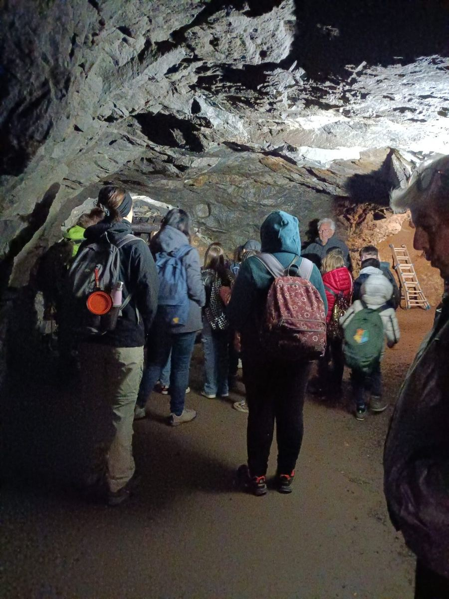
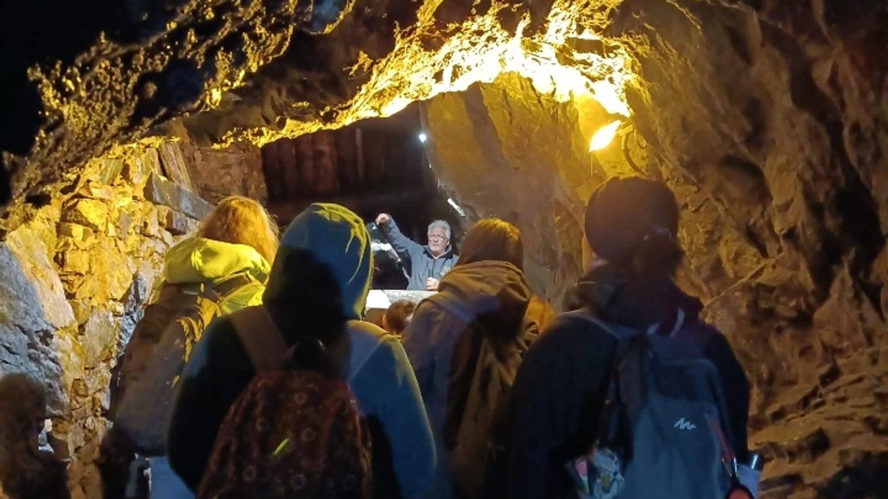
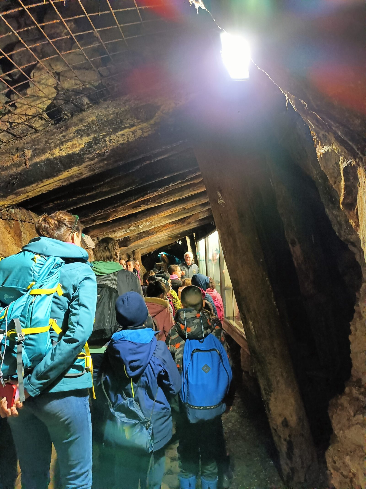
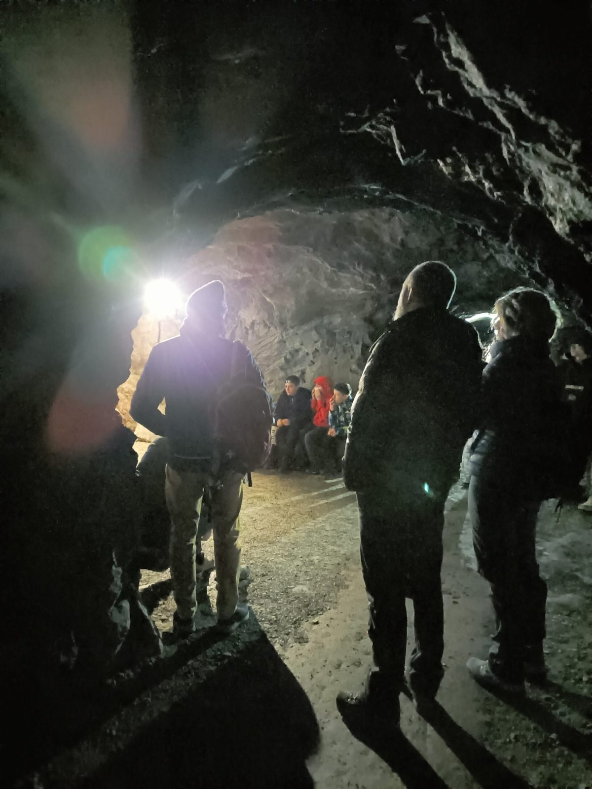
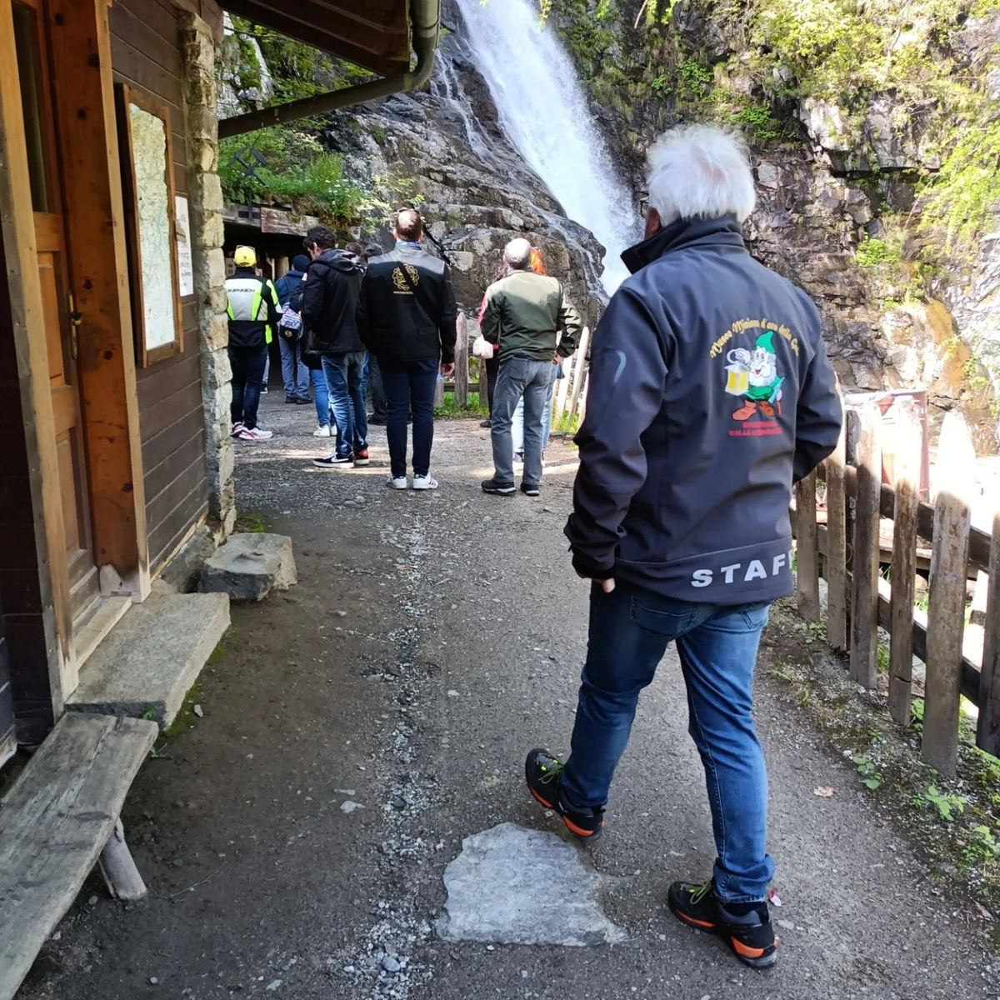
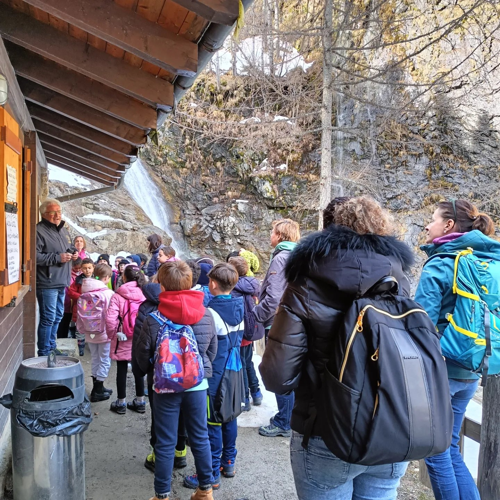

1.5 km on the level
About 1.5 km round trip, also accessible for visitors with disabilities and pushchairs.

Why visit
The Guia Gold Mine Museum, near Fornarelli in Macugnaga, is the first gold mine in the Alps open to tourist, cultural and educational visits — and Italy’s first “mine-museum”.
With an expert guide you retrace over 300 years of mining life: gold veins, equipment, working methods and the natural spectacle of caves and tunnels cut into Monte Rosa’s veins.
An authentic experience for families, schools and the curious — also a highlight of a weekend or mountain day trip: book now — booking is online.

The route
A fully level, lit journey with a guide: about 45 minutes between mining history and underground wonder.

About 1.5 km round trip, also accessible for visitors with disabilities and pushchairs.

See the gold veins and the places where miners faced hard, risky work.

Halfway through, a video illustrates methods and equipment; for the little ones, the local “crystal elves” tradition.
Book online
Online booking. Secure payment by card or PayPal. Instant confirmation by email. Ideal for a Macugnaga weekend, for families and anyone who wants to touch Monte Rosa’s gold history.

The history
On Monte Rosa, gold is not only traces in rivers: it is locked in rock folds, in deposits of auriferous pyrite among gneiss and mica schist.
The ancient mines of the Anzasca Valley — from San Carlo to Pestarena as far as Guia — tell centuries of toil, ingenuity and technical culture. Visiting Guia means entering that “theatre” of mining civilisation.
Further reading: minieradoro.it
Info pratiche
Typical summer season: early June to mid-September, with online booking and a minimum group size for safety (check current conditions when booking). From Pieve Vergonte or Piedimulera: about 45 minutes to Macugnaga.
FAQ
Click Book now: the online booking form for the Guia Gold Mine opens. Complete payment and receive confirmation by email.
Near Fornarelli in Macugnaga (VB), in the Anzasca Valley at the foot of Monte Rosa — Guia Mine.
About 45 minutes of guided visit; the route is about 1.5 km round trip, entirely level and lit.
Yes: a single level usable also by visitors with disabilities and children in pushchairs.
About 9 °C with very high humidity: a jacket is recommended. Animals are not allowed.
It is Monte Rosa’s mining-history highlight: it pairs perfectly with the Walser House, walks and lifts. Ideal also on a day trip from Milan, Varese or Novara. Plan the weekend.
Online booking is via the Macugnaga Booking portal – Experiences at the foot of Monte Rosa (Lem s.r.l. for Unione Montana and local operators). Secure payment by card or PayPal.
Information, prices and availability on the booking portal are provided by the operators. After booking you will receive the organisers’ contacts. Lem s.r.l. is not responsible for running the activities. More information